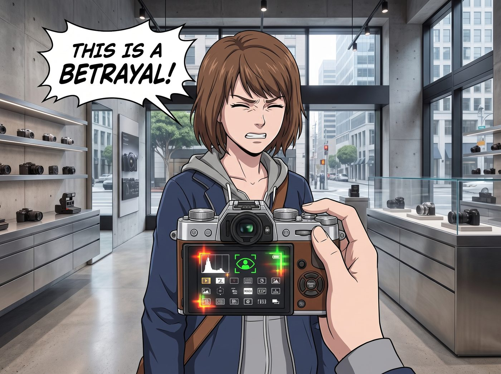
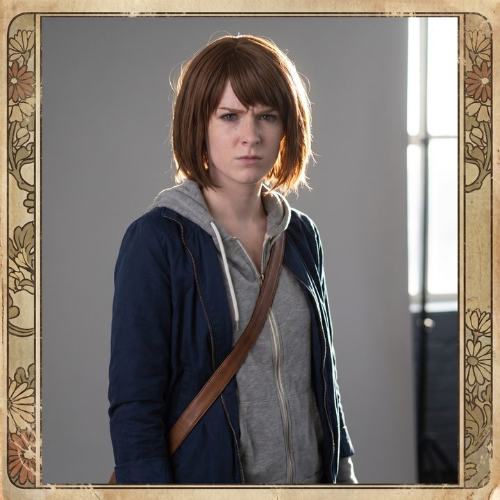

偽裝成文青的終結者


Max 站在舊金山這家裝潢極簡的高階相機體驗店裡，盯著展示櫃裡的那個金屬小方塊，彷彿在看一件被詛咒的賽博龐克遺物。
那是一台全新發表的復古外觀數位相機，機身上搭配著一顆小巧的變焦鏡頭。從外觀上看，它簡直是復古美學的完美復刻：銀色的金屬頂蓋、細膩的荔枝紋蒙皮、還有那些轉動起來發出清脆機械聲的滾花轉盤。它看起來就像是從一九六零年代的古董店裡直接拿出來的經典半格底片機。
但當 Max 伸手將它拿起來，撥動那個偽裝成機械快門鎖的電源開關時，機身背後那塊高畫質觸控螢幕瞬間亮起，螢幕上密密麻麻地閃爍著直方圖、AI人眼追蹤對焦框，以及高達數十種由演算法生成的底片模擬濾鏡。
「這是一種背叛。」Max 痛苦地閉上了眼睛，手裡拿著那台相機，彷彿拿著一個燙手的核按鈕，「這根本不是相機，這是一個披著復古人皮的終結者！它內部有一顆每秒能運算幾億次的晶片，卻偏偏要裝成一個機械齒輪。它甚至用最頂尖的數位演算法，去模擬底片沖洗失敗時的隨機顆粒感和漏光效果！這太虛偽了！」
一、傻瓜機模式的誘惑
Chloe 咬著棒棒糖，雙手插在皮夾克的口袋裡，溜達過來。她從 Max 僵硬的手裡抽走那台相機。
「讓老娘看看這個終結者有多厲害。」
Chloe 甚至沒有把相機舉到眼前，只是單手拿著它，隨意地對著 Max 的臉按下了快門。
沒有手動對焦，沒有測光。相機內部的AI晶片在零點零幾秒內自動鎖定了 Max 因為憤怒而皺起的眉心，並完美計算了窗外的逆光，瞬間輸出一張曝光極度精準、色彩鮮艷、甚至自帶復古日系底片邊框的高畫質數位照片。
「哇哦。」Chloe 看著螢幕上那張毫無瑕疵的抓拍，挑了挑眉毛，「Maxine，妳得承認，這種傻瓜機模式簡直是防呆設計的巔峰。對於我這種連光圈和快門速度都分不清的混混來說，這玩意兒能讓我一秒鐘變成拿普立茲獎的攝影大師。妳再也不用為了等一個破曝光，在雨裡站兩個小時了。」
Max 聽完，眼神裡充滿了被世俗實用主義深深刺痛的絕望：「Chloe Price！攝影的靈魂就在於等待和失誤！如果每一次按下快門都註定是完美的，那我們和生產線上的條碼掃描器有什麼區別？！」
二、龐克反偽裝理論
看著 Max 快要氣哭的文青模樣，Chloe 噗嗤一聲笑了出來。她隨手將那台精緻的數位單眼扔回了天鵝絨展示台上，發出「砰」的一聲輕響。
「安啦，Max。我同意妳的觀點。」Chloe 伸出手，揉了揉 Max 的短髮，然後用一種極度嫌棄的眼神看著那台相機，「這玩意的傻瓜模式確實很爽，但它的存在本身，就是一個巨大的裝模作樣的假貨。」
街頭霸王雙手抱胸，開始了屬於龐克精神的致命吐槽：「我討厭它不是因為它太先進，而是因為它太虛偽。如果它是一台超級電腦，那它就應該長得像一架太空船或者一把雷射槍！但它偏偏要穿上一件復古的皮夾克，偽裝成一個有故事的文藝青年。這就像矽谷那些開著電動車的科技新貴，花五百美金去買一件工廠批量做舊、故意剪破幾個洞的搖滾樂團T恤一樣令人作嘔。」
Chloe 轉過頭，看著 Max 胸前掛著的那台邊角已經磨損掉漆、每次過片都會發出乾澀機械摩擦聲的舊寶麗來。
「真正的復古，是會卡殼、會漏光、會生鏽的。」Chloe 霸氣地攬住 Max 的肩膀，把她往店外帶，「這家店裡的空氣太假了，我們走。去用妳那台真正的破銅爛鐵，給我拍一張對焦全糊的寶麗來。」
Max 抱著自己的老相機，聽著 Chloe 那套粗暴卻直擊靈魂的龐克反偽裝理論，嘴角終於忍不住瘋狂上揚。她意識到，在這個被AI濾鏡和數位演算法全面入侵的時代，只有身邊這個滿嘴髒話的藍髮女孩，才是她對抗賽博虛無主義的最強防線。